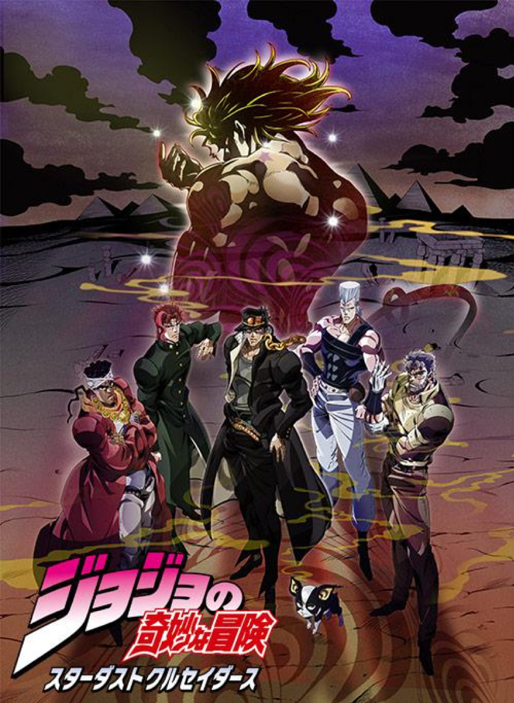

このサイトについて
- 第三部の作品紹介
- メインキャラクターの紹介
- スタンド能力説明
作品紹介
ジョジョの奇妙な冒険 第三部「スターダストクルセイダース」は、空条承太郎(主人公)たちがDIO(ラスボス)を倒すために、スタンドを使い、エジプトを目指す物語です。

- スタンドとは？
- 持ち主の傍に出現してさまざまな超常的能力を発揮し、他人を攻撃したり持ち主を守ったりする守護霊のような存在
ジョジョの奇妙な冒険 第三部「スターダストクルセイダース」は、空条承太郎(主人公)たちがDIO(ラスボス)を倒すために、スタンドを使い、エジプトを目指す物語です。
